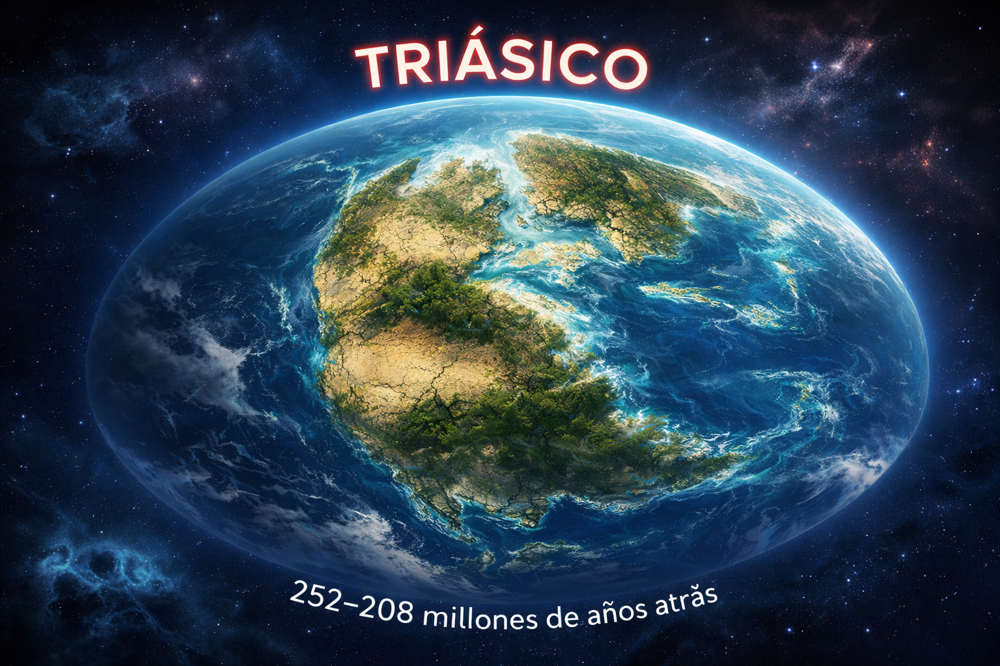
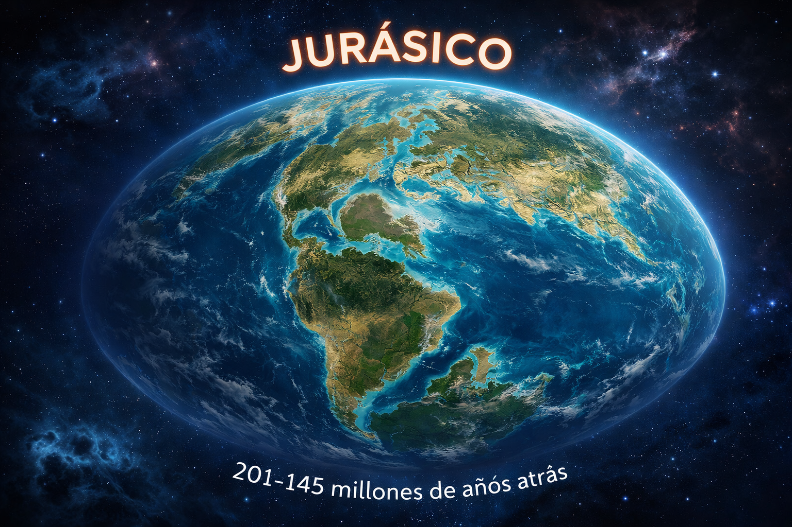
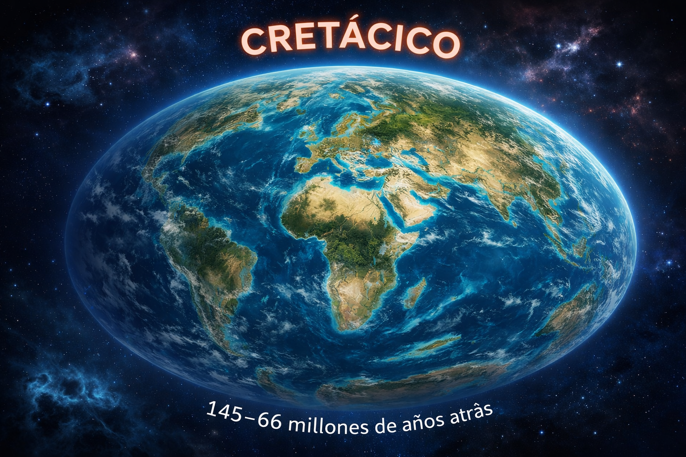

Triásico (252–208 millones de años)
Pangea dominaba el planeta. El clima era árido y aparecieron los primeros dinosaurios, pequeños y ágiles.
🦖 Carnívoros
Depredadores primitivos, rápidos y ligeros.
🌿 Herbívoros
Especies pequeñas que se alimentaban de plantas simples.

Jurásico (201–145 millones de años)
El clima se volvió húmedo. Los continentes comenzaron a separarse y surgieron los dinosaurios gigantes.
🦖 Carnívoros
Grandes cazadores como el Allosaurus.
🌿 Herbívoros
Colosos de cuello largo que dominaban la vegetación.

Cretácico (145–66 millones de años)
Gran diversidad de especies. Aparecen las flores y finaliza con la extinción masiva.
🦖 Carnívoros
El Tyrannosaurus Rex dominó esta era.
🌿 Herbívoros
Dinosaurios con defensas como el Triceratops.